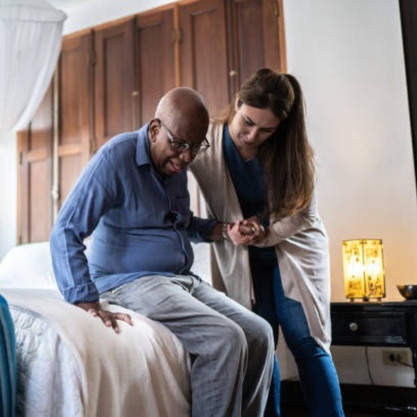

Seja bem-vindo a SB Cuidados! Prestamos serviços essenciais de cuidado com um padrão humanizado, utilizando habilidades e técnicas diferenciadas. Nosso atendimento é personalizado e valoriza a individualidade de cada paciente. Com foco em inclusão, autonomia e qualidade de vida, criamos soluções exclusivas que respeitam a história e as necessidades de cada pessoa. Cuidamos com ética, respeito e compromisso, promovendo acessibilidade e bem-estar tanto para os pacientes quanto para suas famílias.
Olá, meu nome é Suzana Barbosa e esta é a minha empresa de cuidados. Sou cuidadora de idosos há 14 anos e tive minha primeira experiência na área aos 17 anos, quando tive a honra de auxiliar minha mãe nos cuidados com minha avó materna. Desde então, decidi aprofundar meus conhecimentos sobre a profissão e me especializar em cuidados e saúde do idoso.
Atualmente, sou Bombeira Civil, Socorrista, Palestrante e uma eterna estudante.
O que transmito à minha equipe é o que aprendi ao longo desses anos: cuidar, deixando o melhor de nós para o outro, reconhecendo que cada pessoa é única e, por isso, merece um cuidado exclusivo.
